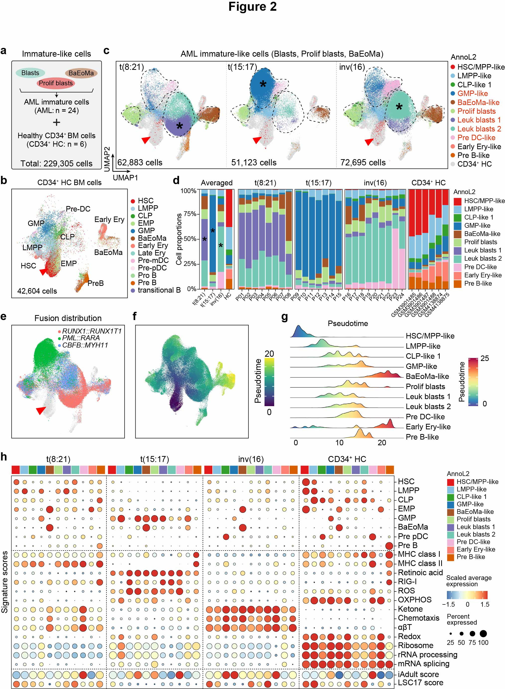

2 Figure 2
 Fig.2 | Differentiation hierarchies of leukemic blasts across different AML subtypes.
a, Illustration of merged analysis of immature-like cells in AML BM samples, utilizing 6 publicly available FACS-sorted CD34+ BMMCs as healthy controls (HC). b, UMAP visualization of public CD34+ HC cells, with colors indicating Azimuth level 2 annotations of hematopoietic cell types. The total number of sequenced cells is indicated in the bottom-left corner. c, UMAP facet visualizations of immature-like cell types from t(8;21, t(15;17), and inv(16) AML BMs, with colors indicating semi-supervised leukemia cell type annotation level 2 (annoL2). Grey indicates healthy CD34+ HC cells. The total number of sequenced cells for each AML subtype is indicated in the bottom-left corner. d, Bar charts depicting the relative fractions of 11 annotated cell types (annoL2) in different AML subtypes and HC groups. The left panel shows the average fractions for each AML subtype and the HC group, while the other panels present the fractions for individual samples. e, UMAP visualization showing the distribution of fusion transcripts: RUNX1::RUNX1T1 (red), PML::RARA (green), and CBFB::MYH11 (blue). Grey indicates the cells wherein no fusion transcripts were detected. f, UMAP visualization of monocle3-pseudotime scores. g, Distribution of 11 different cell types along the pseudotime score axis. h, Dot plots of signature scores for gene sets characterizing relevant biological processes across 11 different hematopoietic cell types in AML subtypes and HC groups.
2.1 (b) UMAP of HC
scAML.prog.anno <- read_rds(paste0(in_dir, "Table1.3.scAML.prog_harmony.anno.rds"))
p2 <- DimPlot(scAML.prog.anno, reduction = "umap", group.by = "predicted.celltype.l2", split.by = "FAB",
pt.size = 1, label = F, repel = T, raster = T, cols = pcol_2)
pdf(paste0(out_dir, "Fig2b.pdf"), width = 20, height = 9)
p1 + p2
dev.off()2.2 (c) UMAP distribution across AML
anno_color <- c("#E31A1C", "#86C2E2", "#33A02C", "#1F78B4", "#A65628", "#B2DF8A", "#7570B3", "#73C8B4", "#F1B6DA", "#FB8072", "#D95F02")
anno_name <- c("HSC.MPP-like", "LMPP-like", "CLP-like", "GMP-like", "BaEoMa-like", "Progs-Prolif", "NPW-high", "LSC17-high", "Pre-DC", "Erythroid", "Pre-B")
anno_color2 <- c("HC_CD34" = "#D9D9D9", anno_color)
scAML.sub1 <- scAML.prog.anno %>% subset(FAB %in% c("M2AE", "HC_CD34"))
scAML.sub1@meta.data <- scAML.sub1@meta.data %>%
mutate(annoL2 = as.character(annoL2),
annoL2 = ifelse(FAB %in% "HC_CD34", "HC_CD34", annoL2),
annoL2 = factor(annoL2, levels = names(anno_color2)[c(1:2, 4:5, 3, 6:7, 10:12, 9, 8)]))
p1 <- DimPlot(scAML.sub1, reduction = "umap", group.by = "annoL2", cols = anno_color2,
order = T, label = F, repel = T, raster = T, pt.size = 0.5) + labs(title = "M2")
scAML.sub2 <- scAML.prog.anno %>% subset(FAB %in% c("M3PR", "HC_CD34"))
scAML.sub2@meta.data <- scAML.sub2@meta.data %>%
mutate(annoL2 = as.character(annoL2),
annoL2 = ifelse(FAB %in% "HC_CD34", "HC_CD34", annoL2),
annoL2 = factor(annoL2, levels = names(anno_color2)[c(1:2, 4, 6:12, 5, 3)]))
p2 <- DimPlot(scAML.sub2, reduction = "umap", group.by = "annoL2", cols = anno_color2,
order = T, label = F, repel = T, raster = T, pt.size = 0.5) + labs(title = "M3")
scAML.sub3 <- scAML.prog.anno %>% subset(FAB %in% c("M4CM", "HC_CD34"))
scAML.sub3@meta.data <- scAML.sub3@meta.data %>%
mutate(annoL2 = as.character(annoL2),
annoL2 = ifelse(FAB %in% "HC_CD34", "HC_CD34", annoL2),
annoL2 = factor(annoL2, levels = names(anno_color2)[c(1:2, 4:7, 10:12, 3, 8:9)]))
p3 <- DimPlot(scAML.sub3, reduction = "umap", group.by = "annoL2", cols = anno_color2,
order = T, label = F, repel = T, raster = T, pt.size = 0.5) + labs(title = "M4")
pdf(paste0(out_dir, "Fig2c.pdf"), width = 13, height = 4)
p1 + p2 + p3 + plot_layout(ncol = 3, guides = "collect")
dev.off()2.3 (d) Bar charts
p1 <- plot_stat(scAML.prog.anno, plot_type = "prop_fill", group_by = "FAB", pal_setup = anno_color) +
theme(axis.text.x = element_text(angle = 45, hjust = 1, vjust = 1))
p2 <- plot_stat(scAML.prog.anno, plot_type = "prop_fill", group_by = "orig.ident", pal_setup = anno_color) +
theme(axis.text.x = element_text(angle = 45, hjust = 1, vjust = 1))
pdf(paste0(out_dir, "Fig2d.pdf"), width = 9, height = 4)
p1 + p2 + plot_layout(ncol = 2, widths = c(0.45, 3), guides = "collect")
dev.off()2.4 (e) Fusion distribution
df <- scAML.prog.anno@meta.data %>%
mutate(fus_group2 = case_when(
(fus_group == "Positive" & FAB == "M2AE") ~ "M2AE",
(fus_group == "Positive" & FAB == "M3PR") ~ "M3PR",
(fus_group == "Positive" & FAB == "M4CM") ~ "M4CM",
is.na(fus_group) ~ "ANA")) %>% rownames_to_column("ID") %>%
left_join(., scAML.prog.anno@reductions$umap@cell.embeddings %>% data.frame() %>% rownames_to_column("ID")) %>%
column_to_rownames("ID")
df1 <- df %>% filter(is.na(fus_group))
df2 <- df %>% filter(!is.na(fus_group)) %>% sample_n(nrow(.))
pdf(paste0(out_dir, "Fig2e.pdf"), width = 4.7, height = 3.5)
rbind(df1, df2) %>%
mutate(mysize = ifelse(is.na(fus_group), 1, 3)) %>%
ggplot() +
ggrastr::rasterise(geom_point(aes_string(x = "umap_1", y = "umap_2", color = "fus_group2", size = "mysize"),
stroke = 0, alpha = 1), dpi = 300) +
scale_color_manual(values = c("#D9D9D9", "#F8766D", "#00BA38", "#619CFF")) +
scale_size_continuous(range = c(0.05, 0.3)) +
ggthemes::theme_few()
dev.off()2.5 (f) Pseudotime UMAP
cds <- read_rds(paste0(in_dir, "Table1.4.scAML.prog_harmony.anno.monocle3.rds"))
scAML.prog.anno <- AddMetaData(object = scAML.prog.anno,
metadata = cds@principal_graph_aux@listData$UMAP$pseudotime, col.name = "pseudotime")
pdf(paste0(out_dir, "Fig2f.pdf"), width = 4, height = 3.5)
FeaturePlot(scAML.prog.anno, features = "pseudotime", pt.size = 0.4, order = T, reduction = "umap", raster = T) &
scale_color_viridis_c()
dev.off()2.6 (g) Ridge plot of pseudotime
df <- scAML.prog.anno@meta.data %>% rownames_to_column("ID") %>%
left_join(., scAML.prog.anno@reductions$umap@cell.embeddings %>% data.frame() %>% rownames_to_column("ID")) %>%
column_to_rownames("ID")
pdf(paste0(out_dir, "Fig2g.pdf"), width = 6, height = 4, useDingbats = F)
ggplot(df, aes(x = pseudotime, y = annoL2, fill = stat(x))) +
ggridges::geom_density_ridges_gradient(scale = 1.2) +
scale_fill_gradientn(name="Pseudotime", colors = colorRampPalette(rev(brewer.pal(10, "Spectral")))(99)) +
scale_y_discrete(limits = rev) + theme_minimal() +
theme(panel.grid = element_blank())
dev.off()2.7 (h) Dot plots of signature scores
idx_feature = rev(colnames(scAML.prog.anno@meta.data)[c(25:37, 40:58)])
p <- DotPlot(object = scAML.prog.anno, assay = "RNA", features = idx_feature, cols = "RdYlBu",
group.by = "FAB", split.by = "annoL2") +
geom_point(aes(size = pct.exp), shape = 21, stroke = 0.2) +
theme_bw() + theme(axis.text.x = element_text(angle = 90, hjust = 1, vjust = 0.5)) + coord_flip()
####
anno_name <- c("HSC.MPP-like", "LMPP-like", "CLP-like", "GMP-like", "BaEoMa-like", "Progs-Prolif", "NPW-high", "LSC17-high", "Pre-DC", "Erythroid", "Pre-B")
df_raw <- p$data %>%
mutate(FAB = str_extract(id, "M2AE|M3PR|M4CM|HC_CD34"),
annoL2 = str_replace_all(id, "M2AE_|M3PR_|M4CM_|HC_CD34_", "")) %>%
mutate(FAB = factor(FAB, levels = c("M2AE", "M3PR", "M4CM", "HC_CD34")),
annoL2 = factor(annoL2, levels = anno_name))
p1 <- df_raw %>%
group_by(features.plot) %>%
mutate(avg.exp.scaled = MinMax(avg.exp.scaled, -1.5, 1.5)) %>%
ggplot() +
geom_point(aes(x = id, y = features.plot, fill = avg.exp.scaled, size = pct.exp), shape = 21, stroke = 0) +
facet_grid(~FAB, scales = "free", space = "free") +
scale_fill_distiller(palette ="RdYlBu") +
theme_bw() + theme(axis.text.x = element_text(angle = 90, hjust = 1, vjust = 0.5)) +
scale_radius(range = c(0, 6))
pdf(paste0(out_dir, "Fig2h.pdf"), width = 12, height = 9)
p1
dev.off()